3. Digital Images
Images are one of the most fundamental data types in graphics. We use images to record real-world illumination, to represent the results of a render, to send values to a display device, to specify how material properties vary over a surface, and in many more uses. This chapter introduces the basic concepts of images, from their representation to their manipulation.
3.1. Images
We model images as functions from the image plane to a set of colors. The image plane is a rectangle in two dimensions, and in the real world it may represent the area covered by a camera sensor, or the one covered by a display device. The colors represented by an image may be a recording of real-world illumination values, for example in photographs, or the values we send to a display device to reproduce a scene. We will see more about colors later. For now, we can assume that colors are vectors with three components, corresponding to the intensities of red, green and blue light.
To store and manipulate images on a computer, we need to discretize the image. We do so by representing an image as a two-dimensional array of color values, called pixels, where each pixel corresponds to the image colors in the vicinity of the pixel center. The number of pixels in each dimension is called the resolution of the image. For now, you can think of pixels as small squares that cover the image plane. Figure 3.1 shows a diagram of this discretization.
We can think about the discretized image as an approximation of the real-world image function. Higher resolution images are better approximations, while lower resolution ones are worse. The idea of employing approximations to represent real-world data is at the core of computer graphics. When it comes to images, it is common today to manipulate images with resolutions in the order of 10 mega-pixels, or 10 million pixels. This resolution is motivated by engineering consideration in the manufacture of cameras and displays, and by the fact that human eye has only limited acuity, that impose limits on the perceived details beyond a certain resolution. For example, many digital cameras shoot images with resolution between 8 and 25 mega-pixel, while display are generally lower resolution with HDTV displays having 2 mega-pixels and 4K displays having 8 mega-pixels. The choice of a particular resolution is a trade-off between perceived quality and the cost of storing and manipulating the images. When viewing images screens, 4K displays are generally considered of high quality since our eyes cannot perceive the individual pixels at a normal viewing distance.
We will use the notation \(\mathbf{I}(\mathbf{x})\) to indicate the color of a point \(\mathbf{x}\) on the image plane. For an image with resolution \(\mathbf{r}\), the point \(\mathbf{x}\) is defined in \(\mathbf{x} \in [0,r_1] \times [0,r_2]\). The discretized version of this function is indicated as \(\mathbf{I}_\mathbf{i}\), with discrete pixel coordinates indicated as \(\mathbf{i}\) in the range \(\mathbf{i} \in [0, r_1-1] \times [0, r_2-1]\). In this notation, we can write the continuous and discrete image functions as
In graphics, it is common to parametrize continuous image functions in a manner that is independent of the number of pixels in the image. We do so by using the canonical coordinates \(\mathbf{u}\), defined in the range \(\mathbf{u} \in [0,1]^2\), that indicate the relative position of a point on the image plane. The range \([0,1]^2\) is called the unit square and we will see many applications of this type of parametrization in the remainder of the book. This parametrization is equivalent to setting \(\mathbf{u} = \mathbf{x} / \mathbf{r}\), and helps us writing equations, and software, in a manner that is independent of the number of pixels in the image. In this notation, we can write the continuous image function as
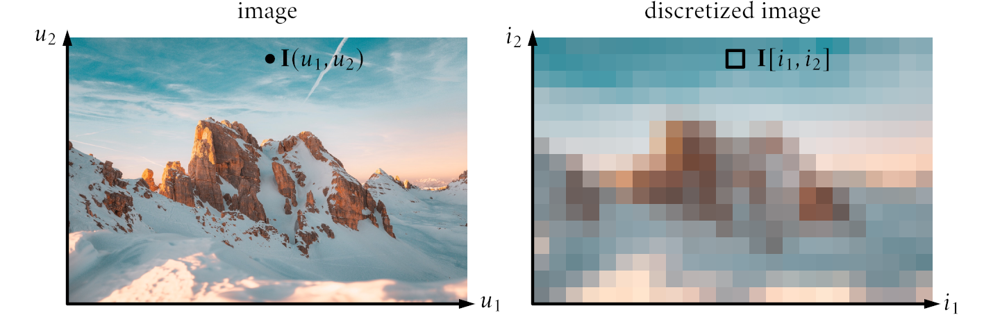
Figure 3.1. Digital images are approximations of real-world ones, since we measure and store values with a fixed number of pixels. Image courtesy of Eberhard Grossgasteiger on Unsplash.
So far we have been vague about what image colors are. The reason for this is that pixel values have different meanings, depending on the type of image considered, and its uses. The most common image types are the ones that record illumination values, and the ones that are used to display them. Also, the concept of color is quite complex, and well beyond the scope of this book. For now, we will assume that colors are represented as three components: read, green and blue. The use of three components is motivated by the fact that the human eye is sensitive to three different ranges of wavelengths, which roughly correspond to red, green and blue. So a color can be written as a column vector as
Before we continue, let me introduce some conventions. In this book, we will orient the image plane so that the origin is at the bottom-left corner, the \(x\)-axis points to the right, and the \(y\)-axis points up. This is just one of the possible conventions, as shown in Figure 3.2. Most graphics applications flip the \(y\)-axis so that it points down, with the origin at the top-left corner. The convention we choose is preferable to write equations since we do not need to flip coordinates throughout the book.
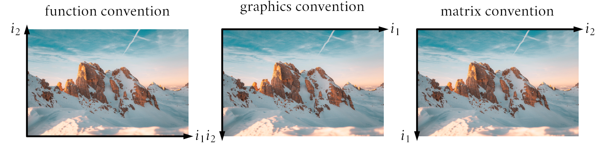
Figure 3.2. Conventions used to orient image axis in different applications.
The other convention we follow is that the integer coordinates of a pixel reference to the pixel center, and not the pixel corner, as shown in Figure 3.3. Again this makes writing equations simpler.
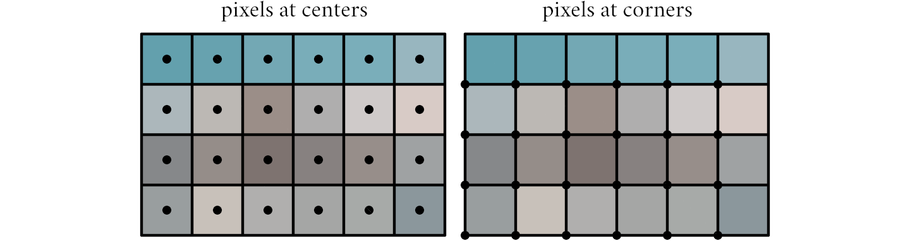
Figure 3.3. Convention on integer pixel locations in the continuos plane.
3.2. High Dynamic Range Images
High dynamic range images, or HDR images, store real-world illumination values. To be more precise, they store radiance, which, informally, measures the amount of illumination carried by a beam of light that reaches a point on a surface. We store radiance since it is the physical quantity that the human eye is sensitive to. In the reminder of this chapter, I am going to use colloquial terms to indicate physical quantities, to make the explanation less verbose.
Radiance is defined for each wavelength of light, so each pixel should store a function that maps wavelengths to radiance. In practice though, most graphics applications store radiance for only red, green and blue, since the human eye is sensitive only to three values, which very roughly correspond to the red, green and blue wavelengths of light.
Radiance values are defined over a very wide range, since they go from zero, i.e. the absence of any light, to as large a value as we can make it. In graphics, it is reasonable to consider the range of values that our eyes can see, namely from the night sky to the solar disk at noon. These cases correspond to radiance values that go between \(10^{-3}\) to \(10^{9}\) candela per meters squared. This is a considerable range that most digital sensors cannot cover. In fact, the human eye can only adapt to see thing at night or during the day, but cannot do both at the same time, while digital cameras can record a much smaller range of values. The range of illumination of an example HDR image is shown in Figure 3.4.
Still, in graphics application it makes sense to store illumination values without caring about their upper limit, and use floating-point arithmetic to manipulate them. As far as units, most HDR images are not stored in physical units, but in a range of values such that one correspond roughly to white on a display device. We will indicate HDR images as functions
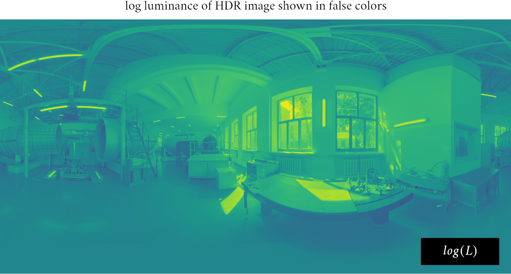
Figure 3.4. High dynamic range images store illumination values. Here we show the average value of each pixel in a logarithmic scale. Image courtesy from PolyHaven.
3.3. Low Dynamic Range Images
Today's displays cannot reproduce the range of illumination that our eyes can see, but a significantly smaller one. For example, at the time of this writing, the peak radiance of many displays is of the order of \(10^3\) candela per meters square.d So images meant to be displayed have a smaller range of values than HDRs, while still retaining the red, green and blue channels. These images are called low dynamic range images, or LDR images.
LDR images are defined in the nominal range of zero to one, where zero is the darkest color a display can reproduce and one is the brightest one. LDR images can be stored as floats, for higher precision, or using 8 bits per channel, for smaller memory. In our function notation, we can write LDR images as
LDR pixels are not absolute values, like HDRs, but are defined with respect to a particular display device. This is the reasons why HDRs are sometimes called scene-referred images and LDRs are sometimes called display-referred images. Obviously we cannot encode images for each single display we might want to use. Instead, we encode images with respect to reference display devices, that precisely define how colors should be reproduced by actual physical displays. At the time of this writing, the most commonly used reference is the sRGB color space.
All reference display encoding have two components: a definition for the colors of the red, green and blue primaries, and a tonal curve that transform linear values to the ones inputted to the display. The motivation for this tonal curve is to encode values in a manner that is closer to the way the human eye perceives steps in intensity. For example, in the sRGB color space, values are encoded approximately by raising them to the power \(2.2\). With this encoding, darker regions get brighter, since our eyes are most sensitive to steps in dark values. Figure 3.5 shows the effect of this encoding.
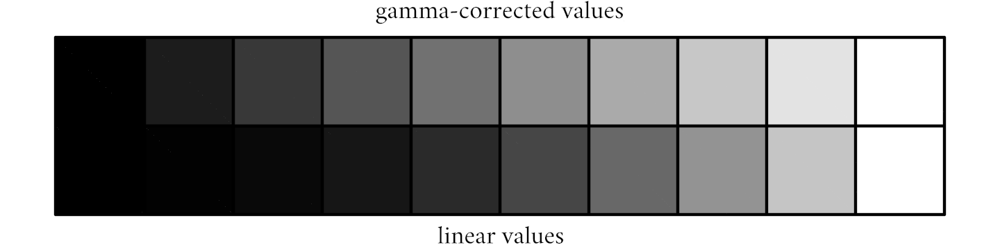
Figure 3.5. Equal steps encoded in sRGB and linearly. Note that equal steps in sRGB, shown at the top, appear approximately equal to our eyes. Instead equal steps of the raw values, shown at the bottom, do not appear to be equally spaced.
3.4. Tone Mapping
Realistic rendering algorithms computed radiance values, that are naturally represented as HDR images. But to view images on a display, we need to convert them to LDRs. The conversion between HDR and LDR is called tone mapping.
Tone mapping seems impossible though since displays cannot reproduce the range of illumination values that our eyes can see. But it is what photographers and cinematographers have done for decades. The main reason why tone mapping works is that the human eye is not sensitive to absolute values, but to relative ones, so we can reproduce the perceived look of HDR images in LDR displays by modulating the color intensity.
Tone mapping is both a science and an art. It is a science in the sense that its basic tenants have been proven in psychophysics. It is an art since tone mapping is used by artists to set the tone of pictures, from a noir look to a bright musical. For this reason, there are several methods available. Here we will introduce the simplest ones.
Let us begin by showing an HDR image directly on a display device, as shown in Figure 3.6. In graphics, we call this linear tone mapping, since we do not apply any correction to the HDR values. Note how the darker regions feel too dark compared to a natural scene.
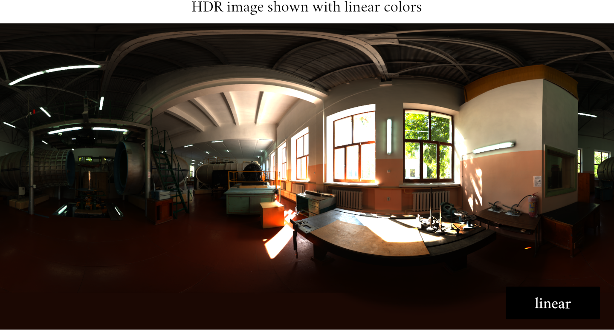
Figure 3.6. Uncorrected HDR image. Image courtesy of PolyHaven.
This problem arises from the fact that our display device expects images in an LDR color space, with a non-linear correction applied. This non-linearity brightens darker values and is historically motivated by the fact that the human visual system has a non-linear response to illumination. The correction applied in the sRGB color space is approximately equal to raising the linear HDR values to the power of one over two point two, and clamping the resulting values to the range zero to one. This is also known as gamma-correction. We plot this correction in Figure 3.7, and write it as
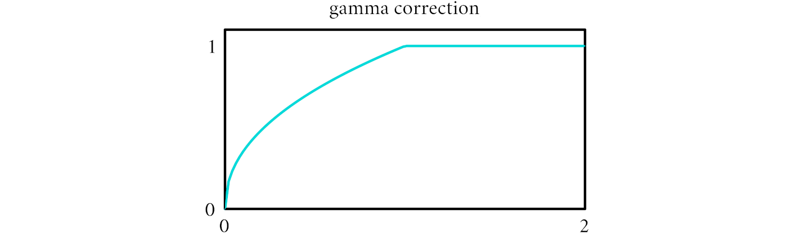
Figure 3.7. Gamma correction with a gamma value of 2.2.
When we apply the correction to the previous image, we obtain a more realistic depiction of the image content, shown in Figure 3.8.
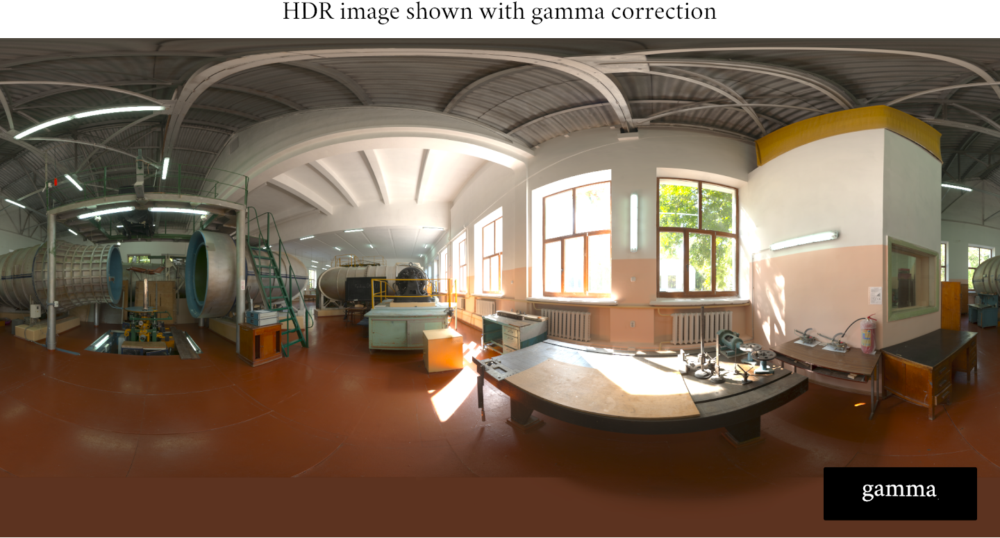
Figure 3.8. Gamma correction with a gamma value of 2.2.
If we want to be precise, sRGB is not a simple gamma correction, but a slightly more complex transformation. The differences are minor, but, for the sake of completeness, we plot the sRGB transfer function in Figure 3.9, and write it as
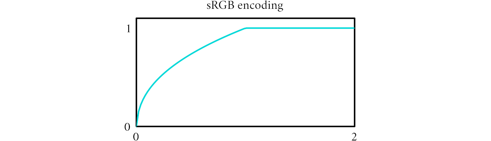
Figure 3.9. sRGB tonal curve.
Just like gamma-correction, when we apply the correction to the HDR image, we obtain a more realistic depiction of the image content, shown in Figure 3.10. In fact, the difference between the two corrections are minor.
Figure 3.10. HDR image converted to sRGB for display.
One disadvantage of converting to sRGB directly is that it brightens darker regions too much, making them look "washed out", while at the same time crops values above one abruptly. Several tone mapping operators have been presented to fix these issues. Ultimately the choice is a matter of personal preference since the mood of the image changes when the operators are applied. Here we present a simplified version of the ACES tone mapping operator that is used in film production. This operator is applied before sRGB conversion to provide a better input before display. We use an approximation by Krzysztof Narkowicz that fits the original operator as a ratio of polynomials as
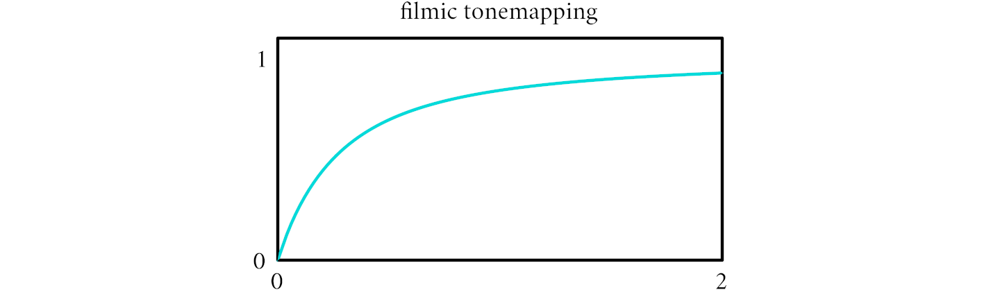
Figure 3.11. Filmic tone mapping curve.
When applied to the HDR image, we obtain a more cinematic look, shown in Figure 3.12. Note how the pixels in the windows are not clipped, and how the darker regions keep a stronger contrast.
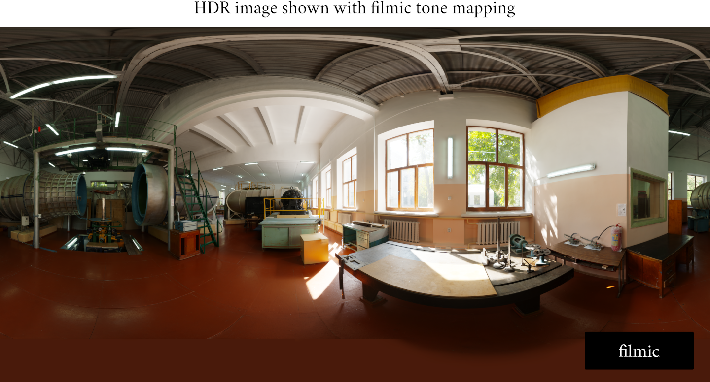
Figure 3.12. HDR image displayed with filmic tone mapping.
Filmic tone mapping assume that the HDR values are already in a range close to what the display can reproduce. HDR images might have values in a significantly larger range, from dark corners to sunny skies. So we first need to determine which HDR value will map to white on a display. This is done by scaling the HDR values by a constant factor, that is typically expressed as a power of two, where the exponent is called exposure. The term exposure comes from film photography where it indicates the amount of light that the lens allows in. In that domain exposure is expressed in stops, i.e. powers of two of lighting values. This nomenclature stays with us even today. If we put all together, our complete tone mapper can be written as
Figure 3.13 shows the effect of increasing and decreasing the image exposure. Note how we can recover details in the brighter and darker areas.
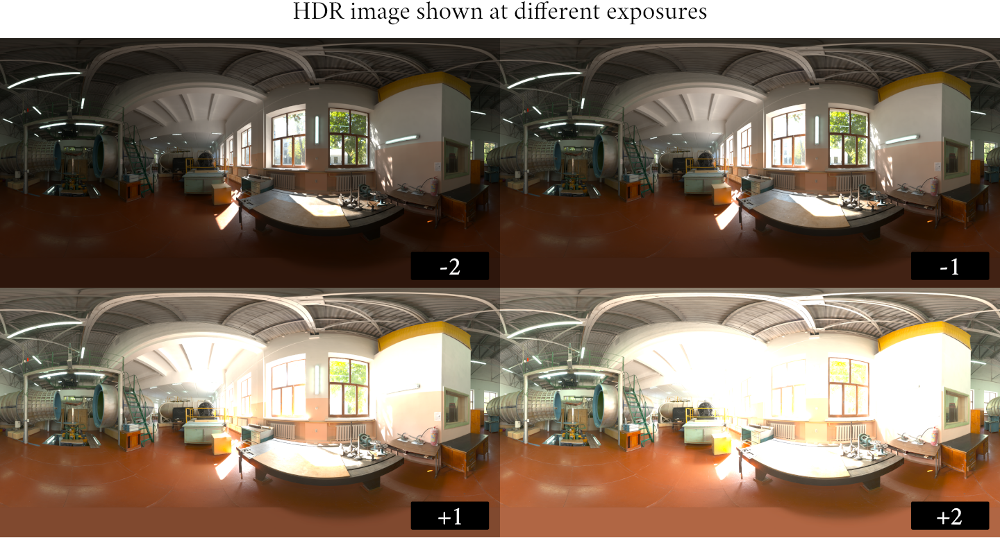
Figure 3.13. HDR image tone mapped with -2, -1, +1 and +2 exposures.
3.5. Color Grading
Color grading is the process of modifying the colors of an image to achieve a particular look. Color grading is used in photography, cinematography and computer graphics. Proper color grading is more an art than a science, and it is beyond the scope of this book. In this section, we will introduce a few commonly used grading operations, to give some intuition on how they work.
The most common color grading operation is color tinting. White balance is used to remove color casts from images, but can also be used to introduce them for artistic purposes, as shown in Figure 3.14. To apply a tint to an image we simply multiply the color of each pixel by a constant color \(\mathbf{t}\), i.e.
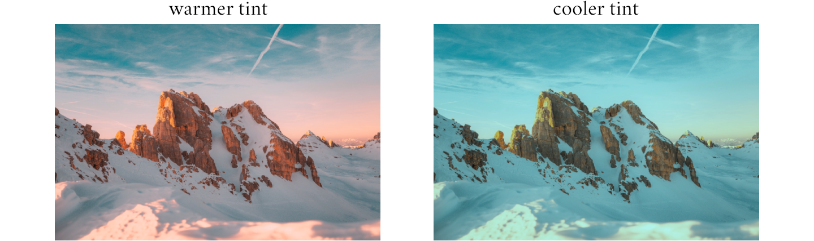
Figure 3.14. Tinting an image with a constant color.
Another common operation is contrast adjustment. Contrast is the difference between the darkest and brightest values in an image patch. We can increase contrast by applying a function that maps the darkest values to darker ones and the brightest values to brighter ones. The preferred shape of the contrast function is a matter of personal preference, and depends on the image content. In general though, it is preferred to have smooth functions that map the \([0, 1]\) interval to \([0, 1]\), thus preserving pure black and pure white. A possible choice is the Christopher Schlick's gain function, plotted in Figure 3.15, and defined as
Figure 3.15. Gain function with different values of the contrast parameter \(c\).
When applied to an image, the gain function increases contrast for \(g > 1/2\) and decreases it for \(g < 1/2\). An example of two contrast settings is shown in Figure 3.16.
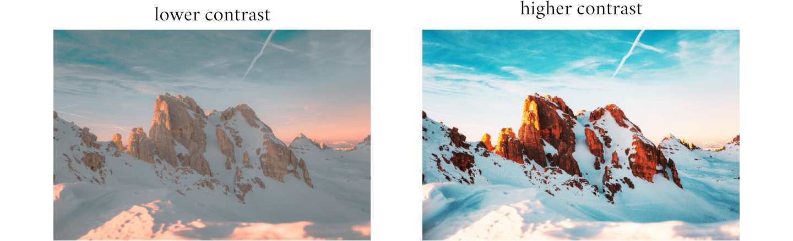
Figure 3.16. Contrast adjustments.
Finally, we can adjust the saturation of an image by interpolating between the color of each pixel and its gray-scale version, the latter computed for example as the mean of the three color components. Saturation adjustments are shown in Figure 3.17, and can be written as
Figure 3.17. Saturation adjustments.
3.6. Compositing
In many applications, we want to compose a partially-transparent foreground image over a background one. This operation is called compositing and is used in applications such as from image editing and rendering. An example of image composition is shown in Figure 3.18.
To compute the image composite, we need to know which pixels of the foreground image are visible, and how much of the background is visible through them. This is done by storing an coverage value for each pixel. Coverage measures the relative area of a pixel that is occupied by foreground objects. In the composited image, the background color will show only when the foreground pixel is not fully covered, i.e. when its coverage is less than one. Coverage values go from zero to one, indicating the range from fully unoccupied to fully occupied. In graphics, we often use the term \(\alpha\) to indicate the pixel coverage.
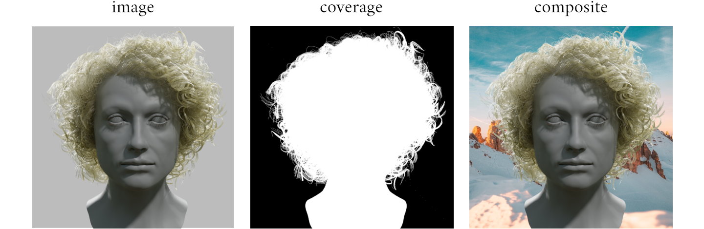
Figure 3.18. Example of image compositing with a synthetic foreground image and a photograph as background. Foreground image rendered from a 3D model by Daniel Bystedt from Blender.
To see how to derive compositing rules, we first consider the case of a background with full coverage. In this case, for each pixel, the color of the composite is the sum of the color of the foreground, weighted by its coverage, and the color of the background weighted by the area that remains visible. That relative area is one minus the coverage of the foreground. A small diagram, shown in Figure 3.19, helps understanding this rule. This compositing operation is known as the over operator. If we indicate the foreground as \(A\) and the background as \(B\), we can write the color of each pixel as
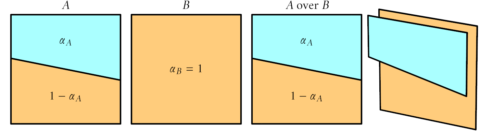
Figure 3.19. Compositing a foreground pixel onto a background one. Diagram modeled after Steve Marschner's lecture notes.
Let us now consider the case of compositing three images. For each pixel, the composited color is the weighted average of the three input colors. The weight of the foreground color is just its coverage. The weight of the middle color is the area visible through the foreground, multiplied by the coverage of the middle pixel. That is to say that the weight of the middle color is the product of the middle coverage times one minus the coverage of the foreground. Finally, the weight of the background color is the area visible through both the first two pixels, which is the product of one minus the foreground coverage and one minus the middle coverage. Again, a small diagram, shown in Figure 3.20, helps us visualize this construction. In the case of three images, if we indicate with \(A\), \(B\) and \(C\) the three layers, we can write the composited color as
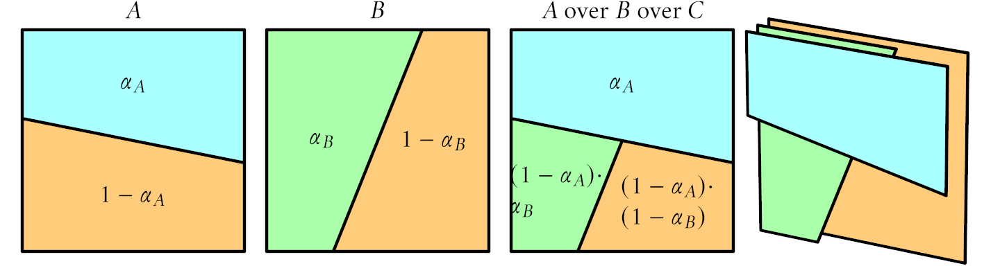
Figure 3.20. Compositing a foreground pixel onto a background one. Diagram modeled after Steve Marschner's lecture notes.
Now we would like to generalize the previous case to computing the composite of a stack of images. To do this, we need a way to compute both the color and coverage of two pixels that are not fully covered. Looking at the previous diagrams, we can see how the composited coverage is the sum of the coverage of both pixels, where the bottom is scaled by one minus the top coverage. The composited color is computed in the same manner, but needs ot be scaled by its coverage to account for the fact that the pixel is not fully covered. Putting it all together, we have
We can now recursively apply this equation for all layers to composite an arbitrary number of images. We start with two images and composite their result into a new one by applying compositing to each over pixels. We then composite the result with the next image, and so on.
When handling multiple layers, a change of notation simplifies the equations and lets us reason about the problem better. We define the pre-multiplied color as the pixel color scaled by its coverage. We use primed letters to indicate premultiplied values. We can write the previous equation with pre-multiplied colors as
The composite of three images can then be written more elegantly, in a manner that can be easily generalized to any number of images.
From this equation, we can see that the composite of \(n\) images, that we label with increasing \(i\) going from foreground to background, can be written as
We can also show that the over operator is associative, i.e. the order in which we composite layers does not matter. When writing software this associativity is important since it means that we can composite layers in any contiguous group we desire and still obtain the same result. For example, in an image processing application with thousands of layers, when a user draws a single layer, we can cache the composite of all layers above and below it, and provide interactive feedback. In formulas, we write associativity as
One important aspect to notice is that in image compositing we model opaque pixels that are partially covered. This should not be confused with pixels covered by a translucent material, like a thin sheet of glass. In imaging, the two models are often mixed and many 2D editing programs used alpha compositing also for making entire images semi-transparent. In rendering though these two concepts are handled in different manners. Coverage is accounted while converting objects' edges to pixel values, while transparency is modeled by changing the materials that objects are made of. This idea is shown in Figure 3.21.
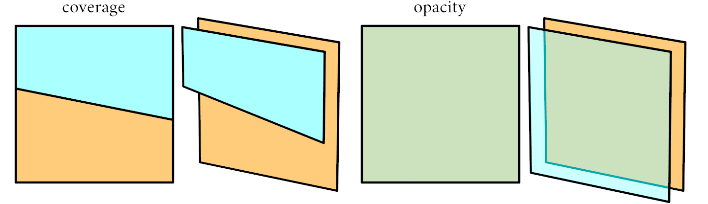
Figure 3.21. Comparison between compositing with coverage and opacity. Diagram modeled after Steve Marschner's lecture notes.
One other aspect we glossed over are the assumptions under which the compositing rules apply. These assumptions come into play when we compute the visible areas of pixels in the middle layers. To do this precisely, we would need more information than the coverage only, namely the shape of the visible areas and their relative orientations. Without this information, which is not practical to store, we assume that the fragments of each visible layer are oriented randomly with respect to the others. This is the assumption that underlies how we estimate the visible areas as we go down the compositing stack. For most application, this assumption is reasonable at least as a rough approximation. This idea is shown in Figure 3.22.
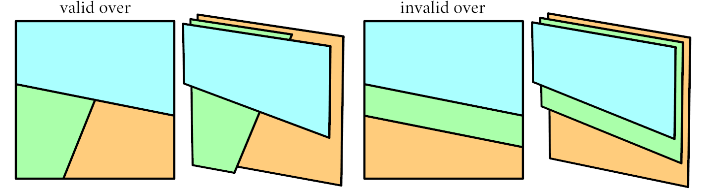
Figure 3.22. Comparison between cases where the over operator is valid and where it is not. On the left, the assumption of independent orientations means that we can approximately compute the area as done in the over operator. On the right, the two top images are aligned, so their orientations are not independent. In this case, the area estimate does not hold. Diagram modeled after Steve Marschner's lecture notes.
3.7. Image Reconstruction
In many applications, we need to query image values at locations that do not correspond to pixel centers. For example, we may want to display an image at a different resolution than the one it was captured at, for example by zooming into it. In these cases, we need to reconstruct a continuous function from the discrete pixel values. This process is called image reconstruction. One way to view this process is to liken it to data interpolation. For the sake of clarity, we will present interpolation first in the one dimensional case, and then generalize it to two dimensions.
Let us consider a discrete set of values \(f_i\) defined on a set of \(r\) points \(x_i\) placed at the center of an integer grid cell, i.e. \(x_i = i + 0.5\). From these discrete values, we want to reconstruct a function \(f(u)\) for \(u = x / n \in [0,1]\). One possibility is to define \(f(x)\) as the piece-wise constant interpolation of the input values \(f_i\). In this case, the reconstructed function takes the value of the nearest discrete value \(f_i\) for each integer interval, i.e.
This formulation generalizes to multiple dimensions. In the case of images, we have a discrete set of pixels \(\mathbf{f}_\mathbf{i}\) defined on an \(n \times m\) grid of equally-spaced pixel centers \(\mathbf{x}_\mathbf{i} = [i_1 + 0.5, i_2 + 0.5]^T\). From these values, we want to reconstruct a function \(\mathbf{f}(\mathbf{u})\) that is defined for all \(\mathbf{u} = \mathbf{x} / \mathbf{r} \in [0,1)^2\). In this case, the piece-wise constant reconstruction is a function that takes the value of the nearest pixel \(\mathbf{f}_\mathbf{i}\) for all points in the corresponding pixel, i.e.
Figure 3.23 shows an example of piece-wise constant interpolation in one and two dimensions. One concern about this interpolation is that it is not continuous between samples at points. This is clearly visible by the "jumps" in the plotted function. In the case of images, this means that the reconstructed image will have a pixelated appearance, with discontinuities at pixel edges. In practice, this makes piece-wise constant interpolation not particularly useful.
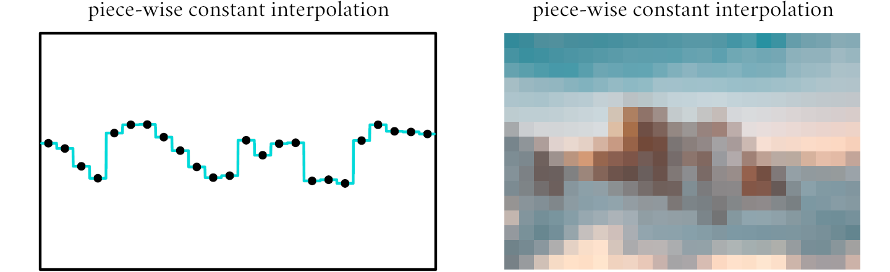
Figure 3.23. Example of piece-wise constant interpolation in one and two dimensions. Image courtesy of Eberhard Grossgasteiger on Unsplash.
An improvement over piece-wise constant interpolation is to use linear interpolation between nearby discrete values. In one dimension, a piece-wise linear reconstruction of \(f\) can be written as
In the case of images, a piece-wise linear reconstruction blends the values of the four nearest pixels \(\mathbf{f}_{i_1,i_2}\), \(\mathbf{f}_{i_1+1,i_2}\), \(\mathbf{f}_{i_1,i_2+1}\), \(\mathbf{f}_{i_1+1,i_2+1}\) in the area between the four pixel centers. At image boundaries, where some neighbors are not defined, we can either repeat the nearest pixel, by clamping the coordinates to the image boundaries, or repeat the image periodically, by taking the remainder of the coordinates. Both clamping and repeating are valid options, and the choice depends on the application. In the following equation, we assume that the coordinates are clamped to the image boundaries, and write linear interpolation as
Figure 3.24 shows an example of piece-wise linear interpolation in one and two dimensions. In this case, the reconstruction is continuous, making this interpolation scheme a lot more useful in practice. At the same time, we notice that the reconstructed function is not smooth, since its derivative is discontinuous at the sample points. In the case of images, you should notice some visible artifacts aligned with the main axes.
Figure 3.24. Example of piece-wise linear interpolation in one and two
dimensions.
Higher-order interpolation, for example using cubic polynomials, can be constructed by using more samples. The advantage of higher-order interpolation is that the reconstructed function is smoother, and its derivative is continuous. The disadvantage is that it is more expensive to compute, and that it may introduce overshoots and ringing artifacts. In general, many applications use piece-wise linear interpolation, since it is a good compromise between quality and performance, and since we tend to use significantly higher resolution images since they capture more details, which mitigates the concerns on the interpolation function.
3.8. Image Sampling
So far, we have not defined precisely what a pixel is, nor how to compute its color. In rendering, this is called image sampling. It turns out that this is not a trivial question, and that the answer depends once again on the application domain. In this section, we will take a view of pixels that is common in realistic rendering.
We could define the color of a pixel as the value of the function \(\mathbf{I}\) at the pixel center. We show this sampling in Figure 3.25, and write it as
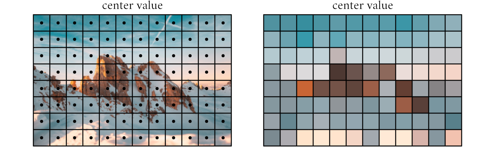
Figure 3.25. Approximating the color of a pixel as the value at the pixel center.
As we can see from the sampled image, there are significant variations in colors that do not correspond to any visible feature in the scene. These are due to the fact that the function \(\mathbf{I}\) is not constant within pixels, so the value at the pixel center does not represent the behavior of the function within each pixel.
An alternative definition is to define the color of a pixel as the average of the function \(\mathbf{I}\) within the pixel area. This has an analog in real-world cameras where the value of a pixel is computed as the average of the light that reaches the sensor within the pixel area. We can write the average of a function over a domain as the integral of the function over the domain divided by the area of the domain, as
We will study integrals of this type in more detail in the next chapters. For now, we will estimate this integral numerically by sampling the function at multiple points within the pixel area, on a finer grid, and averaging the results, as shown in Figure 3.26. In graphics, this method is often called "super-sampling" since we sample the function multiple times for each final pixel. For a \(n_s \times n_s\) number of samples per pixel, we can write the pixel estimate as
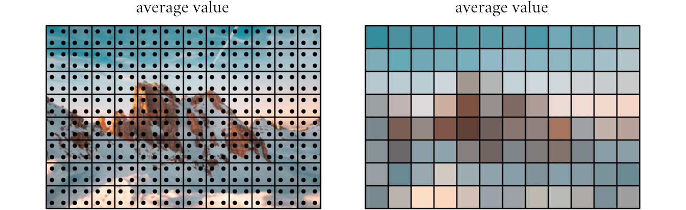
Figure 3.26. Approximating the color of a pixel as the average value over the pixel area.
Image sampling can also be used to "draw shapes" into images. For example, if we want to draw a colored disk in an image, we can just define a function that returns the disk color \(\mathbf{c}\) for points in the disk, and a background color \(\mathbf{b}\) otherwise. Additionally, we can also compute coverage by adding an alpha channel to the function being sampled, and defining the function such that it returns \(1\) for points in the disk and \(0\) otherwise. We can determine if a two-dimensional point \(\mathbf{q}\) is in a disk by checking whether the distance between the point \(\mathbf{q}\) and the disk center \(\mathbf{p}\) is less or equal to the disk radius \(r\). Putting it together, we can "draw a circle" by sampling the function
Looking at Figure 3.27 we can see that even in this case using the average of the function value produces significantly better results than just the pixel center, since pixels not fully covered by the disk have proper color and coverage.
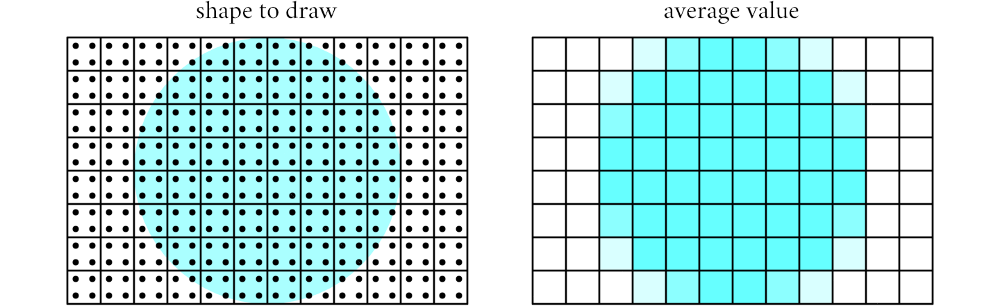
Figure 3.27. Drawing a disk by sampling the pixel center or super-sampling over the pixel area.
3.9. Image Convolution
In many image manipulation tasks, the value of a pixel depends on its neighbors. For example, a blurred image is obtained by substituting each pixel with a weighted average of its neighbors. When the weights are the same for each pixel, we can write the operation as a convolution of the image with a kernel that defines the weights. Before discussing convolution in two dimensions, we will first introduce convolution in one dimension, since it is easier to visualize. The convolution of a function \(f\) with a kernel \(g\), illustrated in Figure 3.28, is defined as
To ensure that the average value of the function is preserved, we require that the kernel integrates to one, i.e.
To compute the previous equations for a discrete function, we would first need to reconstruct the function from its discrete samples, and then integrate the reconstructed function. When the discrete function has high resolution, it is often sufficient to compute the discrete convolution of the function with the kernel, which is defined as
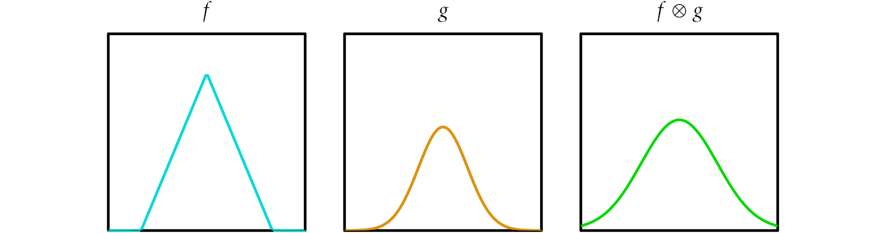
Figure 3.28. Convolution of a function \(f\) with a kernel \(g\).
Convolutions are a well-studied problem and the foundation of many signal processing techniques. Treating convolutions exhaustively is beyond the scope of this book. Instead, we focus on a few aspects that are relevant to image manipulation for graphics.
Convolutions in \(n\)-dimensions, illustrated in Figure 3.29, are written as generalization of the one dimensional case. We can write the convolution \(\mathbf{I} \otimes g\) of a function \(\mathbf{I}\) with a kernel \(g\), as
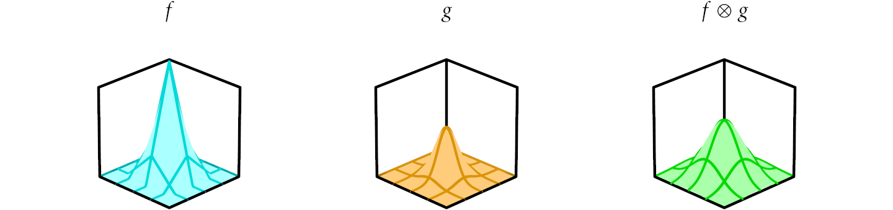
Figure 3.29. Convolution of a function \(f\) with a kernel \(g\).
In the previous equation, we consider kernels with infinite support, i.e. that are defined for all values of \(\mathbf{y}\). In practice, we use kernels with finite support that are defined for \(\mathbf{y} \in [-k_r,+k_r]^n\), where \(k_r\) is the kernel radius. In this case, we can write the convolution as
To compute the previous equations for a discrete function, we would first need to reconstruct the function from its discrete samples, and then integrate the reconstructed function. When the discrete function has high resolution, it is often sufficient to compute the discrete convolution of the function with the kernel, which is defined as
An example of convolution in two dimensions is shown in Figure 3.30, where we convolve an image with a Gaussian kernel, truncated to a radius of \(k_r=3 \sigma\), which is defined as
This convolution is often used to blur images, since it is a good approximation of the point spread function of a camera lens, that we will study in the next chapters.
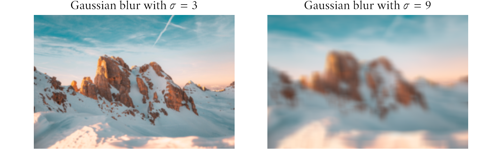
Figure 3.30. Convolution of an image with a Gaussian kernel.
To sharpen an image, we can decrease the low frequencies by subtracting a blurred version of the image from the original, and rescale back the result to preserve the average value, as shown in Figure 3.31. This corresponds to convolving the image with a kernel that is the difference of a Dirac delta function and a scaled blurring kernel, such as a Gaussian. We can write this kernel as
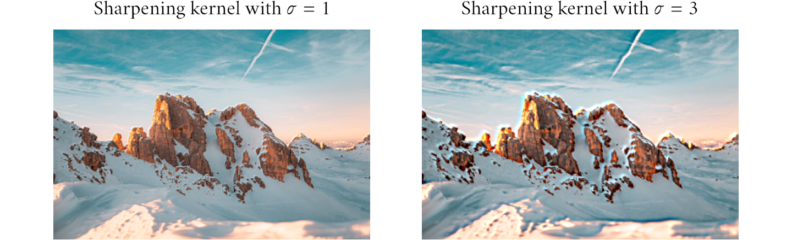
Figure 3.31. Convolution of an image with a sharpening kernel.
In the previous kernels, computing a convolution costs \(O(k_r^n)\) operations, where \(k_r\) is the kernel radius. This is prohibitive for large kernels, so we often use kernels that are separable, i.e. that can be written as the product of one-dimensional kernels as
In this case, we can compute the \(n\)-dimensional convolution as \(n\) one-dimensional convolutions, as
Written in this manner, the computational cost of the convolution is \(O(n k_r)\), which is significantly lower than the \(O(k_r^n)\) cost of the non-separable case.
For example, in two dimension the discrete convolution of an image with a separable kernel can be computed by first computing the one dimensional convolution of all image rows, and then the one dimensional convolution over the columns. Formally this is written as
3.10. Reconstruction as Convolution (*)
The interpolation schemes presented in this chapter have an elegant mathematical formulation in terms of combination of basis functions. In one dimension, we define the reconstructed function \(f(x)\) as the weighted sum of a set of basis function \(b_i(x)\) weighted by the values \(f_i\). In the simplest case, the basis functions are just copies of a kernel function \(g(x)\), shifted to the sample points \(x_i\), i.e. \(b_i(x) = g(x - x_i)\). This construction is illustrated in Figure 3.32. In this case, the reconstruction can be written as
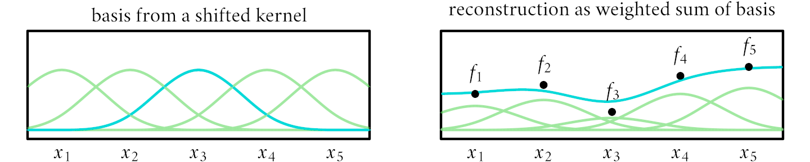
Figure 3.32. Basis from a shifted kernel.
Written this way, we can see that the reconstruction is a discrete-continous convolution of the sample values \(f_i\) with the kernel \(g(x)\), i.e. \(f(x) = (f \otimes g)(x)\). While this interpretation is quite elegant, it is helpful to think about reconstruction as summing over an arbitrary basis, since it is more general, and since we will see it used in other contexts.
Different kernels lead to different interpolation schemes. All kernels we consider here are centered at zero and symmetric with respect to the origin, i.e. \(g(x) = g(-x)\).
The box kernel \(g_b(x)\) is equal to \(1\) for \(x \in [-0.5, +0.5)\), and \(0\) otherwise. The width of the kernel is 1, which means that the reconstruction only considers the nearest sample. Reconstruction with the box kernel, shown in Figure 3.33, is equivalent to piece-wise constant interpolation. More precisely, we write the kernel as
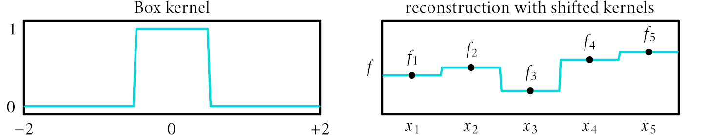
Figure 3.33. Reconstruction with the box kernel.
The hat kernel \(g_h(x)\) is equal to \(1 - |x|\) for \(x \in [-1, +1]\), and \(0\) otherwise. The width of the kernel is 2, which means that the reconstruction considers the two nearest samples, and computes a weighted average of their values. Reconstruction with the hat kernel, shown in Figure 3.34, is equivalent to piece-wise linear interpolation. More precisely, we write the kernel as
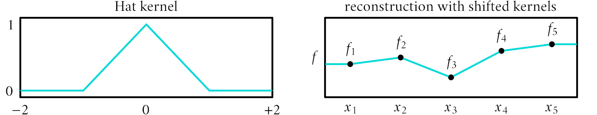
Figure 3.34. Reconstruction with the hat kernel.
To obtain a smoother reconstruction, where the derivatives of the reconstructed curves are continuous everywhere, we can use cubic polynomials as kernel. Several kernels of this type have been proposed in the literature, that differ in the coefficients of the polynomials. One of the most used cubic kernels is the Catmull-Rom kernel, which produces smooth reconstruction that pass through the sample points, and has continuous first derivatives. The kernel is shown in Figure 3.35, and defined as
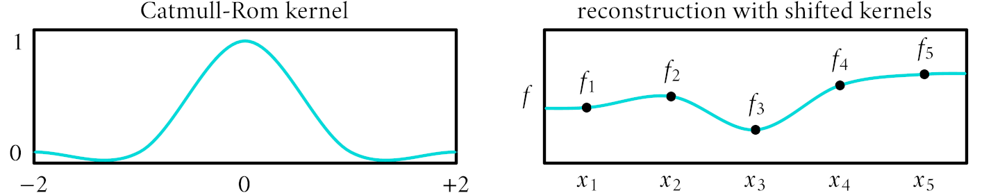
Figure 3.35. Reconstruction with the Catmull-Rom kernel.
Another popular kernel is the cubic B-spline kernel, which has continuous first and second derivatives, and all values are positive. Compared to the Catmull-Rom kernel, the B-spline kernel is smoother, but it does not pass through the sample points. We show the kernel in Figure 3.36, and report here its definition:
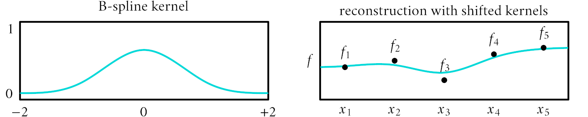
Figure 3.36. Reconstruction with the B-spline kernel.
Finally, we mention the Mitchell-Netravali kernel, which is a cubic kernel that is a blend between the previous to gain some of the benefits of both. This kernel in shown in Figure 3.37, and can be written as
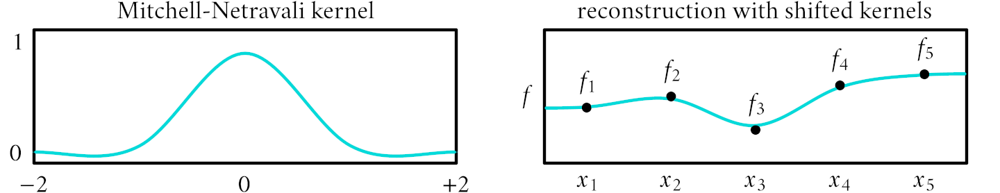
Figure 3.37. Reconstruction with the Mitchell-Netravali kernel.
In multiple dimensions, we follow a similar construction and define the reconstructed function \(\mathbf{f}(\mathbf{x})\) as the weighted sum of a set of basis functions \(b_\mathbf{i}(\mathbf{x})\) weighted by the values \(\mathbf{f}_\mathbf{i}\). The basis functions are just copies of a kernel function \(g(\mathbf{x})\), shifted to the sample points \(\mathbf{x}_\mathbf{i}\). All together, we can write
We will consider \(n\)-dimensional separable kernels, that can be written as the product of a one-dimensional kernel evaluated for each axis. In general, we can write
For example, the box kernel in two dimensions is defined as
while the hat kernel is defined as
The results of image reconstruction for the box and hat kernels are shown in Figure 3.38 and Figure 3.39, respectively.
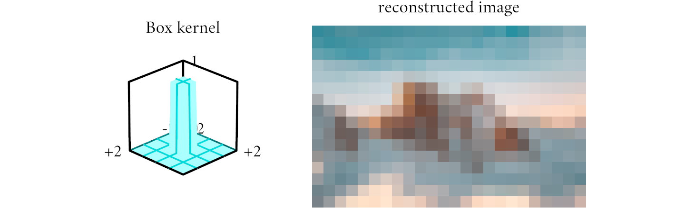
Figure 3.38. Reconstruction with the box kernel.
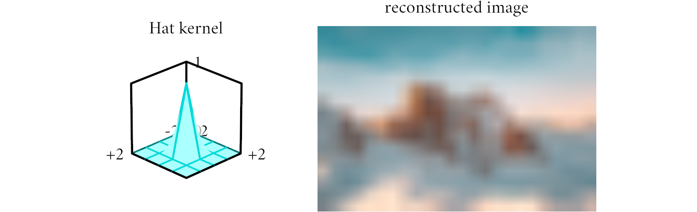
Figure 3.39. Reconstruction with the hat kernel.
The advantage of writing image reconstruction has a weighted sum of basis functions is that we can easily generalize the reconstruction to other kernels, by simply changing the chosen kernel. Figure 3.40 and Figure 3.41 show the results of reconstruction with the Catmull-Rom and Mitchell-Netravali kernels, respectively.
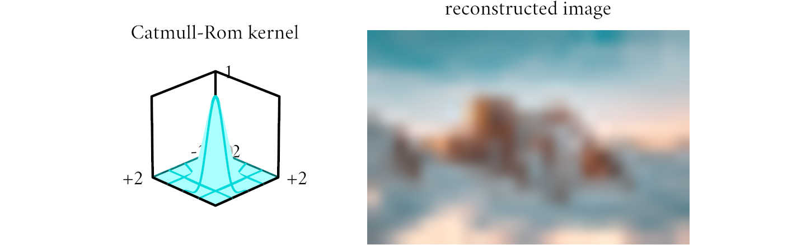
Figure 3.40. Reconstruction with the box kernel.
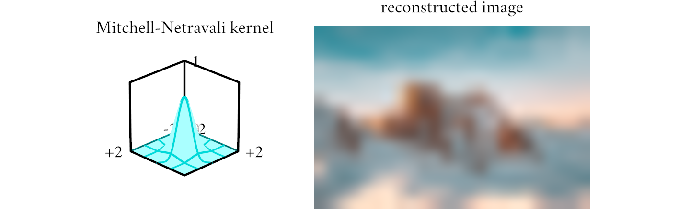
Figure 3.41. Reconstruction with the hat kernel.